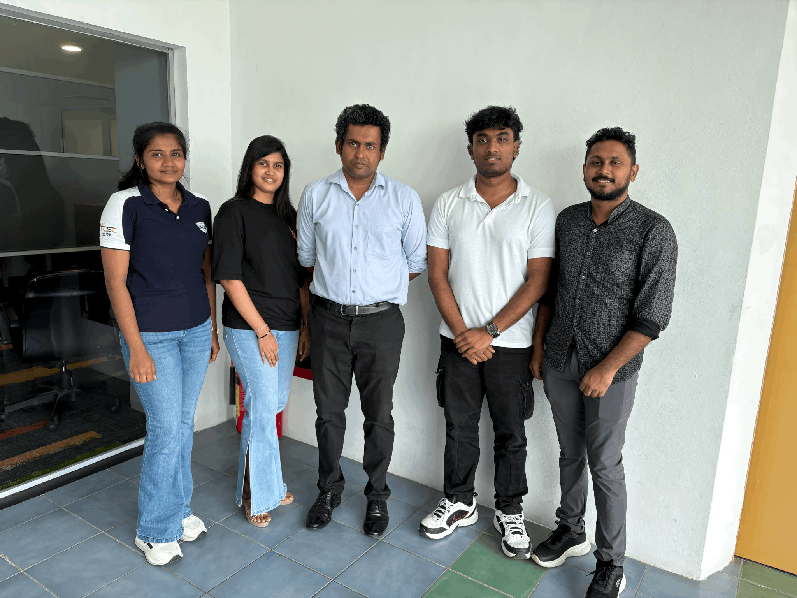
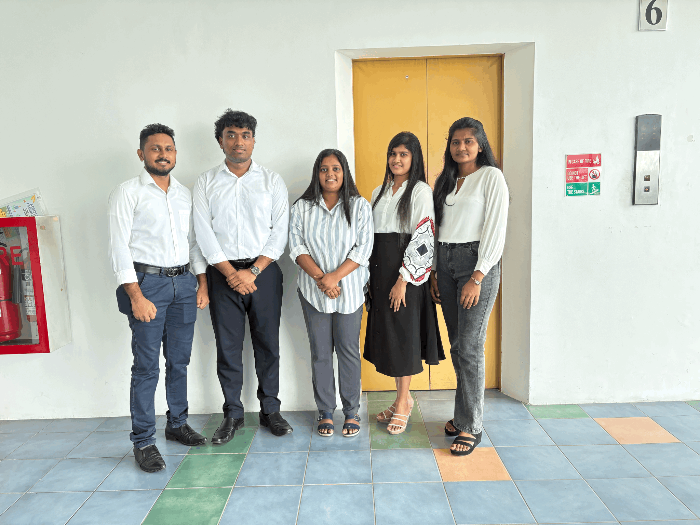
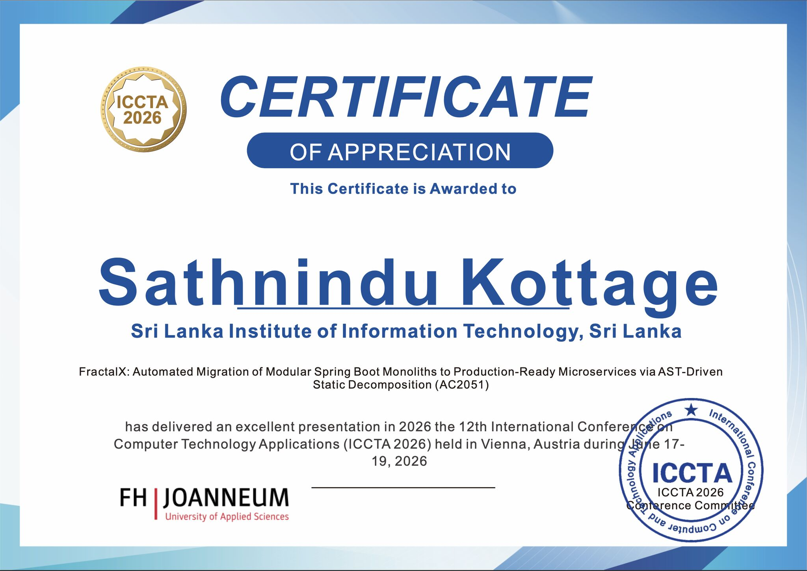
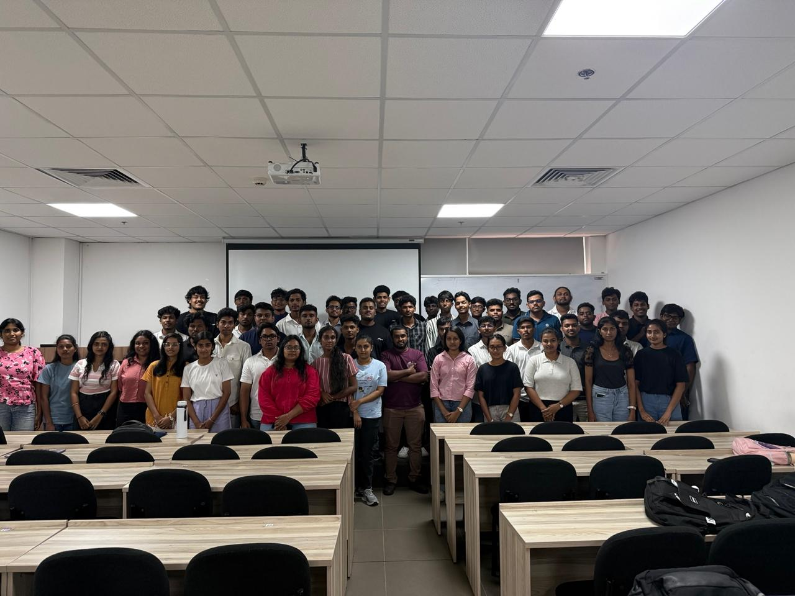
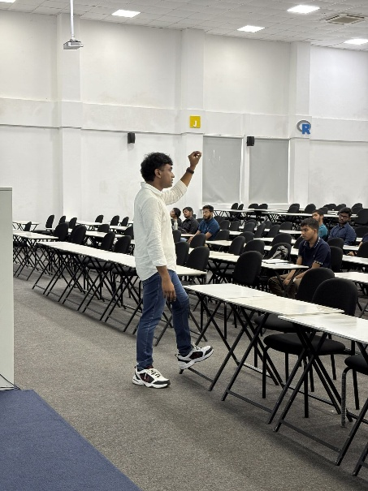
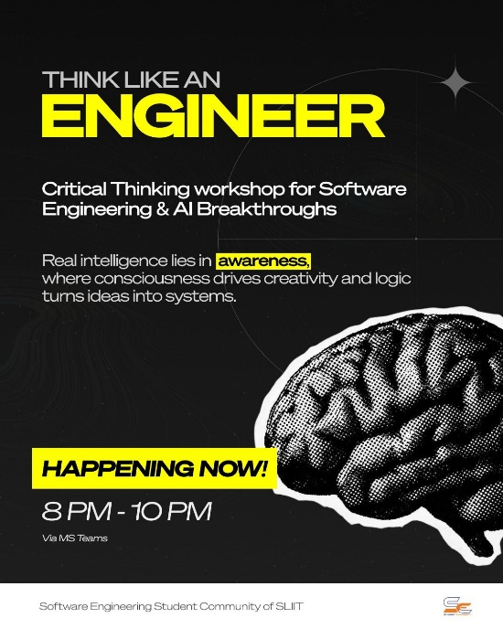
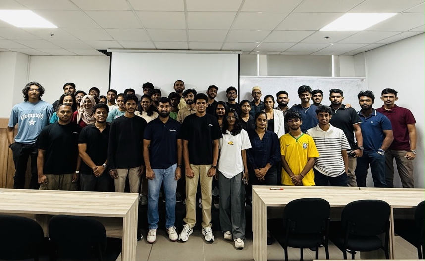
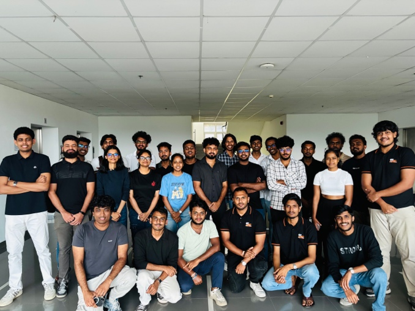
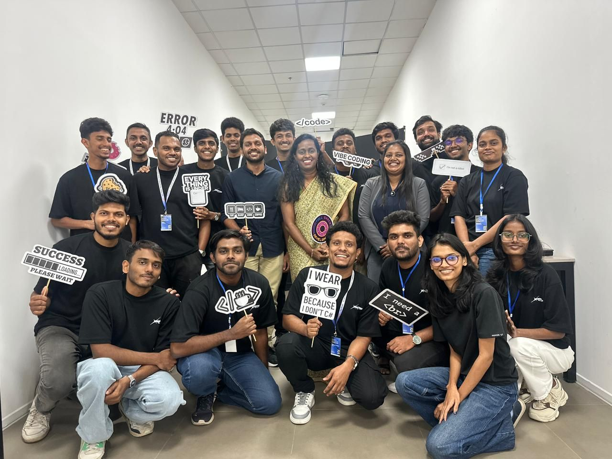

Senior FinTech Software Engineer · Framework Author · Published Researcher
I build the tools other engineers build with — engineered in Sri Lanka, published to the world.
git log --graph --all — a career under version control. Drag to explore; select any commit.
ABOUT
I spent five years shipping production FinTech systems while completing a First Class Honours degree — and used the hours in between to build open-source frameworks and teach engineering to the next generation of students.
My focus is framework engineering: not writing applications, but building the layer beneath them. The research form of that work was presented as a first-author paper at ICCTA 2026 in Vienna. Its open-source form is Wolfigs — developer tooling engineered in Sri Lanka for a global audience.
CAREER
Leading backend engineering and DevOps teams for FinTech and BNPL products, including PayLater — a Qatar-founded Buy Now Pay Later platform. Architecture ownership, mentoring and release engineering. Promoted within 16 months.
Software architecture for production FinTech systems, mentoring of junior engineers, DevOps and server-level operations.
Full-stack product engineering.
Progressed from intern to lead engineer across 30+ client projects; designed and built the company's CI/CD infrastructure.
Led development of the official intranet of Commercial Bank PLC — one of Sri Lanka's largest private banks — in parallel with full-time work and undergraduate study.
RESEARCH
"FractalX: Automated Migration of Modular Spring Boot Monoliths to Production-Ready Microservices via AST-Driven Static Decomposition"
Deferred architectural decomposition carries a well-documented industry cost. FractalX addresses it directly: an AST-driven framework that statically decomposes modular Spring Boot monoliths into production-ready microservices. The research line continues as Prism, its open-source successor.



OPEN SOURCE
3,500+ GitHub contributions. Frameworks and developer tooling, engineered in Sri Lanka and published globally.
GITHUB · LIVE
Pulled from the GitHub API — profile, repositories and a year of contribution activity.
COMMUNITY
Secretary of the Software Engineering Student Community (SESC) at SLIIT · Batch Representative, Years 3 & 4 · technical sessions, industry meetups, and community initiatives.






RECOGNITION
CONTACT
Open to engineering leadership, research collaboration and consulting.